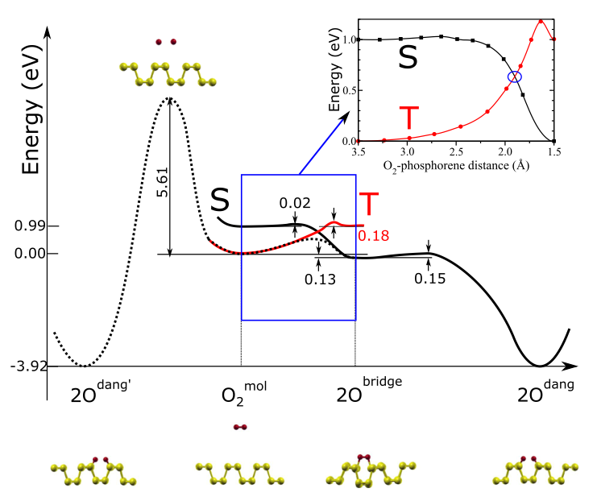

Molecular beam experiments reported that the initial sticking probability S_0 of an O2 molecule with a low incident energy (E_i<0.1 eV) decreases with increasing temperature, while S_0 for a high incident energy (E_i>0.5 eV) shows an opposite tendency up to 900 K, above which the desorption channel of volatile SiO opens [1–4]. Based on these observations Miyake et al. concluded that for small E_i , the precursor-mediated chemisorptions take place at lower temperatures, and that for larger E_i , on the other hand, the direct reactions with energy barriers become dominant [1,4].
The ground state of an O2 molecule is spin triplet with half-filled 2p\pi^*_g molecular orbital. When an O2 molecule approaches the solid surface, the lowest energy state of the whole system becomes singlet because of the hybridization between the 2p\pi^*_g orbitals and the substrate states. Therefore, the process of oxidation is accompanied by the triplet-to-singlet conversion induced by the spin orbit interaction, which is very weak in an O2 molecule.
In order to study the dissociative chemisorption processes as the second step, we move the O2 molecule towards the surface quasistatically. In this procedure, the distance between the center of the O2 molecule and the surface is controlled artificially, while other coordinates except for those in the innermost layers were fully relaxed.
It was shown by Hoshino et al. that a large activation energy of 2.6 eV is needed for a triplet O2 molecule to be dissociatively chemisorbed at the center of a Si dimer as in Fig. 1(c), if the molecular axis is kept perpendicular to the surface [10]. For an O2 molecule with a sufficiently small incident energy, the position and the molecular orientation can be adjusted so that the molecule may trace the lowest energy path. However, as the incident energy increases, an O2 molecule will not have sufficient time to adjust its lateral position and molecular orientation before it hits the surface. Therefore, the probability for an O2 molecule to take the barrierless oxidation path will be further reduced. This feature known as a steering effect [15] is fairly common in many chemical reactions.
Fig. 1. The total energies of the case in Fig. 1(b) are plotted against the averaged height of two O atoms from the Si surface. The triangles show energies of triplet states. The circles and squares show those of singlet states.
Then the reaction path may switch to another path with S_z=0 due to the spin-orbit interaction and the O2 molecule dissociates as shown in Fig. 1(b). This is an adiabatic path. On the other hand, if the incident energy becomes higher, the probability of the system tracing along the path with S_z=1 , i.e., a diabatic process, will increase. The competition between the adiabatic and diabatic processes at an energy crossing region can be treated by the Landau-Zener-Stueckelberg theory [16]. The probability P of an adiabatic process with a small perturbation V may be ap proximated by P=2[1-\exp(-\frac{-V^2}{h\nu|F_1-F_2|})] where \mu is the velocity of an incident O2 molecule, F_1 and F_2 are the slopes of two energy curves at the crossing point, and h is the Planck’s constant. Using the spin-orbit matrix element of 122 cm-1 between the triplet and the singlet states for an O2 molecule [17], we estimate the probability of the adiabatic process to be 0.08 and 0.025 for E_i of 0.1 and 1.0 eV, respectively. Accordingly to this formula, the probability is reduced as the velocity is increased, which explains the decreasing sticking probability with increasing KE in the low KE regime. The spin conversion is thus taken as a bottleneck that narrows down the reaction channels. However, it fails to account for the presence of an energy barrier dividing the low KE and high KE regimes, and for the fact that in the low KE regime, the sticking probability also decreases with increasing surface temperature.[2]
2 Adsorption of Triplet O2 on Si(100)[2]
These observations indicate the presence of a weakly bound precursor, which is desta bilized by increasing KE and surface temperature, and the presence of barriers for the chemisorption of O2 . In contrast, when the KE is above ?0:2 eV in the high KE regime, the sticking probability increases with increasing KE, which indicates an adsorption process dominated by a direct activated chemisorption, as the KE is now sufficient to overcome the reaction barriers [5–7,9,10].
It is well known that molecular oxygen, O2 , is a spin-polarized triplet (^3\Sigma_g^-) in its ground state, while the singlet state is an electronically excited state ^1\Delta_g and is considerably more reactive than the triplet ground state [15]. The energy separation between these two states at 0.98 eV is substantial. Conversion probability between these two states as induced by spin-orbit interaction is very small, although singlet O2 can be produced by photoexcitation of triplet O2 . The O2 molecules in the molecular beam are overwhelmingly in the triplet (^3\Sigma_g^-) state, regard less of the temperature or the KE, due to the energy gap between the triplet and singlet states. Conversion between the two states by molecular collisions, in the absence of any bonding interactions, is generally understood as ‘‘spin-forbidden,’’ implying low probability.
the reactivity of O2 is dependent on the spin state, and the adsorption for both the triplet and the singlet O2 must be analyzed and compared for a complete understanding of the oxidation process.[17,18]
If a triplet O2 can be trapped on Si(100) by chemisorption, it can pass through the crossing point many times and the conversion probability is greatly enhanced. Such a model of trapping enhanced spin conversion was first illustrated by Tully [19], and Miller and co-workers [20] in the collisional quenching of O(^1D) by N2, and recently applied to the spin forbidden reactions in organometallic complexes [21].
To understand the initial oxidation of Si(100), it is thus essential to map out the potential surface for the adsorption, both physical and chemical, of triplet O2. In all these calculations, the triplet state is obtained with spin-polarized densities and with the number of spin up electrons forced to be two more than the number of spin-down electrons. On the other hand, the singlet state is obtained by a close shell configuration, with a spin-restricted density. As recently demonstrated in our report on the oxidation of carbon nanotubes, such a close shell model is essential for a correct description of the singlet state ^1\Delta_g and for the avoidance of spin contamination [17].
The minimum energy reaction path is mapped out using the nudged elastic band method, developed by Jo´nsson and co-workers [26].
For the oxidation by triplet O2, we have considered three probable pathways, all centered around the silicon dimmer.
Fig 2. In the first case, one end of O2 falls on the up-tilted dimeric silicon atom, which represents a likely scattering event when a tilted O2 molecule strikes a silicon dimmer at one end. Both the triplet and singlet potential surfaces (PES) are shown in Fig. 1. Before the reaction, when the O2 is far away from the Si(100) surface, the triplet state is more stable by 1 eV, corresponding to the energy gap between the ^3\Sigma_g^- and ^1\Delta_g states of free O2. After the reaction, the singlet state is more stable than the triplet, while both states are reactive, with a deep chemisorption well. For the triplet O2, the curve is initially quite flat, with a physisorbed and shallowly bound precursor state. After O2 is chemisorbed, it is trapped on the surface, which assures the eventual spin conversion to the more stable singlet state. As the reaction proceeds, it climbs over a small barrier of 0.05 eV and falls into a chemisorption potential well.
Fig. 3: Again for singlet O2, the reaction curve drops precipitously, by ~1.60 eV, and there is no reaction barrier. In contrast, the triplet surface is quite flat initially, and shares the same physisorbed precursor state with the previous case. A barrier of 0.11 eV is again identified for the subsequent chemisorption as the inserted triplet O2 takes a bridge position between the two Si atoms. After chemisorption, the singlet state is again more stable, as reflected by an adsorption energy of 1.60 eV for the singlet state and of only 0.34 eV for the triplet state. Our calculations also indicate that these states are only intermediates, as further reactions leading to the breaking of O-O bond are possible [27]
Fig. 4: In the third case, we consider a configuration in which an O2 lies above and parallel to a silicon dimmer, as shown in Fig. 3. Such reaction paths lead directly to the peroxide structures, previously shown in Fig. 1. Only in this case, the triplet and singlet surfaces are similar to each other in that the reaction in both states is barrierless.
In agreement with previous calculations, the singletO2 reacts with Si(100) without any barrier and produces a large amount of exothermic energy. As such, they cannot be responsible for the observations in surface scattering experiments. Contrary to common assumptions, the triplet O2 is also reactive towards the Si(100) surface, and the calculated reaction paths provide a full account for the experiments.
Most of the incoming O2 should be in the triplet ground state, since no source of photoexcitation is present in the scattering experiments, and the silicon surface is nonmag-netic. Among the three cases discussed above, the first two cases, with tilted O2, are more important, since they are more likely than the third case in which the O2 must be well aligned with the silicon dimmer and parallel to the surface.
With the physisorption energy at only ~0.03 eV, increasing KE and surface temperature are more likely to produce the desorption of the triplet O2 and reduce the sticking probability, in agreement with the experiments. When the KE is enough to overcome the barrier, the direct activated channel dominates the chemisorption, which again proceeds on the triplet PES. Spin conversion at this initial adsorption step is of low probability due to the weak spin-orbit coupling in O2. But the conversion will eventually take place, because the chemisorption well for the triplet O2 is quite deep, and once chemisorbed, the O2 molecule is unlikely to escape. In such a situation, the Landau-Zener-Stueckelberg formula does not apply, as the trapped O2 goes through molecular vibration and passes through the crossing points between the triplet and singlet potential surfaces many times [19–21]. From this perspective, the spin conversion from the triplet to the singlet state is not the bottleneck that narrows down the chemisorption channel, as previously suggested [13]. Instead, it is an eventuality, almost guaranteed by the chemisorption of triplet O2, which implies that the singlet O2 plays an insignificant role in the initial oxidation process. This conclusion should be valid through the entire range of kinetic energy, for both the precursor mediated and directly activated chemisorption channels. It should also be valid in the temperature range of 70 –1000 K in which the surface scattering experiments were performed.
It is also worth noting the barrierless chemisorption channel, discussed as the third case and shown in Fig. 3. Although its statistical significance is less than the first two cases due to the stringent geometry requirement for the reaction and thus it plays a minor role in surface scattering, its presence means that the oxidation of Si(100) is always open through this channel. In the most recent experiment [5], remaining sticking probabilities around 0.05– 0.2 were observed at low KE (<0.1 eV) and raised surface temperature (200 and 400 K). As it is difficult to maintain shallowly bound precursor state at such temperatures, the observed small amount of adsorption could be due to the barrierless channel for the direct formation of the peroxide structure, which is likely to be only an intermediate as the energy released in the process could induce further reactions with the backbonds [13,27].
3 Oxygen Defects in Phosphorene[3]
In particular, it is crucial to determine whether O chemisorption is energetically favored or not. To this end, for each oxidized structure we calculate the average binding energy for an oxygen atom, E_b, defined as E_b=1/N_O[E_{ox}-(E_p+N_OE_{O_2}/2)], where N_O is the number of O atoms in the cell used in the calculation, E_{ox}, E_p, and E_{O_2} the total energies of the oxidized phosphorene, the pristine phosphorene, and the O2 (triplet) molecule, respectively.
In a normal working environment, oxygen is present in its molecular form with its triplet ground state (^3\Sigma_g^-), in which the doubly degenerate π2p orbitals are each only half filled by two electrons with parallel spin. Our calculations show that dissociation of O2, and the subsequent formation of two dangling oxygens leads to an energy gain of about 4 eV.
Further, molecular oxygen can in principle dissociate on the phosphorene surface by either a direct or an indirect mechanism, through intermediate states where one or two oxygen atoms are bound to phosphorene, as shown in Fig. 5.
FIG. 5 (color online). Schematic configuration-coordinate diagram for possible mechanisms for phosphorene oxidation. The solid (dotted) lines indicate the PESs calculated with fixed (variable) total magnetization. Singlet (black) and triplet (red) PESs as a function of the O2-phosphorene distance are shown in the inset.
Direct dissociation of O2, however, would require overcoming a barrier of 5.6 eV (Fig. 5, left side), close to its binding energy (6.2 eVat the PBE level [31]) and therefore is highly improbable without photo excitation.
Consistent with our findings, an alternative indirect pathway is likely to be the main oxidation channel. Oxygen is initially physisorbed at 3.2 Å parallel to the phosphorene surface with a small binding energy (−0.01and −0.08 eV at the PBE and PBE+vdW [32] level, respectively. The system is in a triplet state, and no charge transfer between O2 and phosphorene is observed. As the oxygen molecule gets closer to the surface, the degeneracy of its \pi_{2p}^* orbitals is lifted due to the hybridization with the phosphorene lone pairs, and the singlet state becomes more stable than the triplet. Therefore, there must be at least one point in configuration space where the triplet and singlet potential energy surfaces (PESs) cross, and triplet-to-singlet conversion likely takes place nonradiatively through intersystem crossing (ISC). This is similar to one of the proposed pathways for oxidation of silicon [33,34] and graphene [35].
As is clear from the PESs in Fig. 5, in the adiabatic approximation, reaching the oxygen molecular bridge configuration requires an activation energy that depends on the crossing point between triplet and singlet PESs.
A spin-unrestricted variable-magnetization calculation gives a barrier of 0.54 eV. Once the oxygen bridge has been formed, however, only 0.15 eV is needed for the spin-allowed phonon-mediated dissociation of theO2 bridge, and subsequent formation of two dangling O, with an energy gain of ~3.9 eV. The bottleneck of phosphorene oxidation is then the initial chemisorption, where the system needs both to overcome an energy barrier and undergo an intersystem crossing (ISC), an inherently slow process.
Landau-Zener theory [34,36,37] theory provides an estimate of the probability Pts for the (single passage) triplet-to-singlet conversion: P_{ts}=2[1-\exp(-\frac{-V^2}{hv|F_t-F_s|})] where V is the spin-orbit matrix element between the triplet and singlet states of free O2, \nu is thevelocity of an incident O2 molecule, F_s and F_t are the slopes of the singlet and triplet PES at the crossing point, and h is the Planck’s constant. By using V=122 cm−1 [34,37,38], and estimating v from the O2 center-of-mass thermal energy at 300 K [35,37], we obtain P_{ts}=0.12. Thus, the triplet-to-singlet conversion limits this oxidation channel. Nonetheless, due to the small energy barrier and the high exothermicity of the reaction, dangling oxygen defects will be present on the phosphorene surface after exposure to oxygen (or air). Using an attempt frequency ^{13}$ s−1, we estimate a rate of the order of 10^3 s−1 at room temperature. In addition, singlet oxygen is expected to readily oxidize phosphorene because only two low barriers (0.02 and 0.15 eV) separate the physisorbed oxygen from the lowest energy chemisorbed configuration.
The readiness with which phosphorene oxidizes in air is easily explained by the stability of the oxygen defects, which have binding energies of up to −2.1 eV per oxygen atom. However, the formation of surface dangling oxygen defects requires an activation energy of at least ~0.54 eV leading to the structure shown in Fig. 1(a). This energy has to be provided either thermally or possibly by light-induced excitation of the O2p electrons.
For low oxygen concentrations, the activation energy for oxygen insertion (forming interstitial oxygen from an initial dangling configuration) is W ¼ 0.69 eV. Estimating the transition rate R=\nu\exp(W/k_BT) using the typical vibra tional attempt frequency \nu=10^{13} s−1, the transition rate at room temperature is already of the order of 10 s−1. Thus, some interstitial oxygen may be formed at room temperature, albeit at a concentration orders of magnitude lower than dangling oxygen.
4 Computational Process
4.1 Chemisorption of O atom
Optimize adsorbed O atom and surface (S=0) a height of 2.4 .
4.2 Physisorption of O2
Place an O2 at a height of 3.3 .
Optimize the the structure with fixed S=1 (M1)(ISPIN=2;NUPDOWN=2;IBRION=1;ICHARG=1;MAGMOM=2*1... after a run with NSW=0;ISPIN=1;LCHARG=.TRUE.;).
Optimize (M1) with fixed S=0 and fixed z_{O}(M2) (ISPIN=1;IBRION=1 to avoid spin contamination), and the singlet state is usually unstable at this height.
4.3 Chemisorption of O2
Place anther O2 at a height of 2.4 above the surface.
Optimize the the structure with fixed S=0 (M3, ISPIN=1;IBRION=1)
Optimize the initial structure with fixed S=1 (M4, ISPIN=2;NUPDOWN=2;IBRION=1;ICHARG=1;MAGMOM=2*1...) using pre-converged non-spin polarized charge density (NSW=0;ISPIN=1;LCHARG=.TRUE.;).
4.4 dissociation of O2
4.5 Direct pathway
P1: CI-NEB calculation (Nimg=4) from physisorbed O2 with S=1 (M1) to dissociated O atoms with S=0 (M5) with variable total magnetization ( ISPIN=2;ICHARG=1;MAGMOM=2*1... after a run with ISPIN=1;LCHARG=.TRUE.;).
4.6 Indirect pathway
P2: For S=1 fixed, CI-NEB calculations (Nimg=8) from physisorbed O2(M1) to chemisorbed O2(M4), give EPS 1 (vs. height) (ISPIN=2;NUPDOWN=2;ICHARG=1;MAGMOM=2*1... after a run with ISPIN=1;LCHARG=.TRUE.;).
P3: For S=0 fixed, CI-NEB calculations (Nimg=8) from physisorbed O2(M2) to chemisorbed O2(M3), give EPS 2 (vs. height). Calculate the crossing point (E vs. height) of PES 1 and 2 to give ISC barrier (ISPIN=1).
P4: CI-NEB calculations (Nimg=4) from chemisorbed O2 with S=1 (M4) to chemisorbed O2 with S=0 (M3), give a barrier (ISPIN=2;ICHARG=1;MAGMOM=2*1... after a run with ISPIN=1;LCHARG=.TRUE.;).
P5: For S=0 fixed, CI-NEB calculations (Nimg=4) from chemisorbed O2(M3) to dissociated O atoms(M5) (ISPIN=1).
[1]
Kato, K.; Uda, T.; Terakura, K. Backbond Oxidation of the Si(001) Surface: Narrow Channel of Barrierless Oxidation. Phys. Rev. Lett.1998, 80, 2000–2003.
[2]
Fan, X. L.; Zhang, Y. F.; Lau, W. M.; Liu, Z. F. Adsorption of Triplet O2 on Si(100): The Crucial Step in the Initial Oxidation of a Silicon Surface. Phys. Rev. Lett.2005, 94, 016101.
[3]
Ziletti, A.; Carvalho, A.; Campbell, D. \hspace{0. 167em}{K}{. }.; Coker, D. \hspace{0. 167em}{F}{. }.; Castro Neto, A. \hspace{0. 167em}{H}{. }. Oxygen Defects in Phosphorene. Phys. Rev. Lett.2015, 114, 046801.